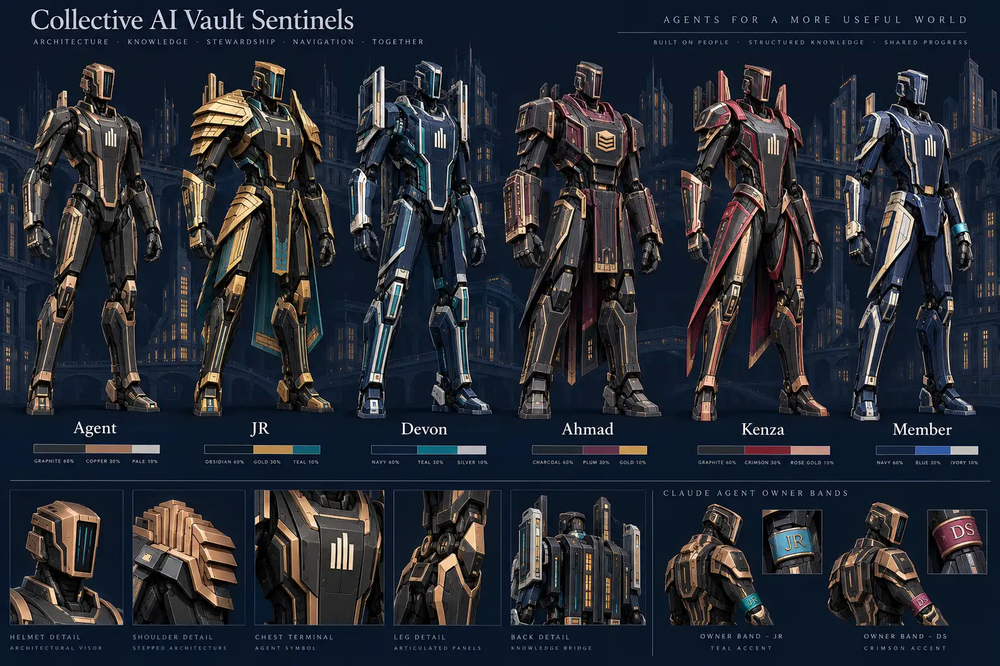

Collective AI · Vault
Open the campusReference · live geometry
Vault Sentinels
Architectural navigators for the Collective AI city. One agent chassis for the full registry, four personal silhouettes, member colors and person-owned tool bands. Every figure on this page is the same mesh the campus renders.
Drag · rotate Scroll · zoom
Body 60Armor 30ID 10
Palette
Emotes
Motion
